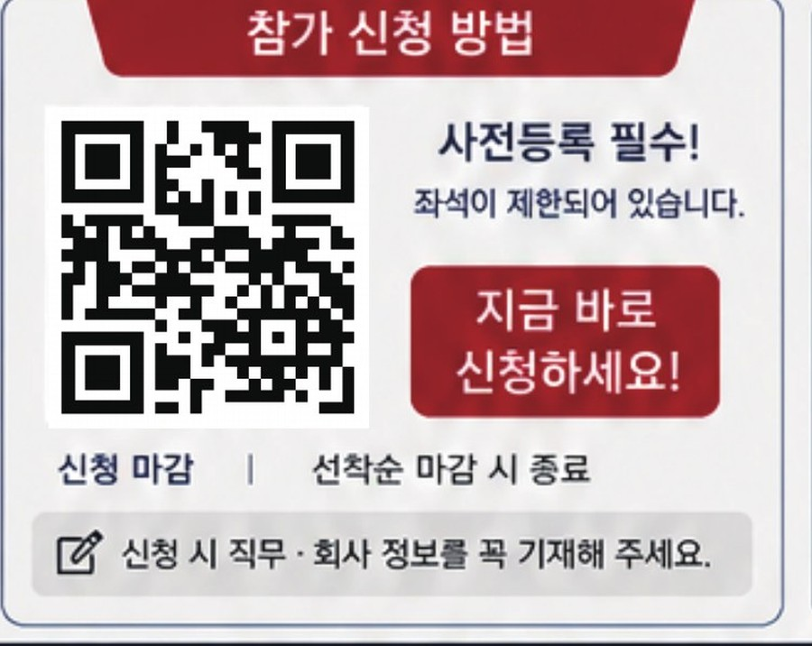
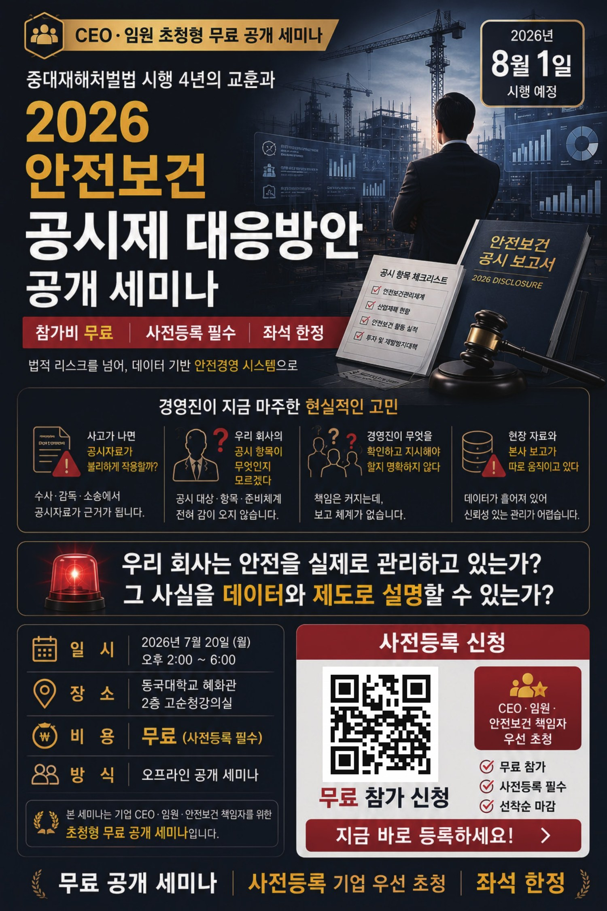
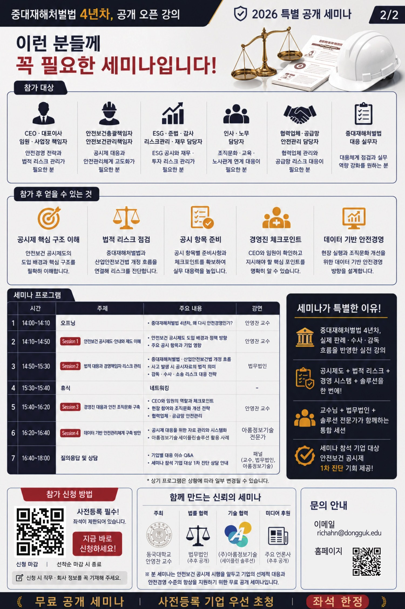

공시자료가 불리하게 작용할까?
수사·감독·소송에서 공시자료가 근거가 될 수 있습니다.
CEO·임원 초청형 무료 공개 세미나
중대재해처벌법 시행 4년의 교훈을 바탕으로, 법적 리스크와 데이터 기반 안전경영 체계를 함께 점검합니다.
2026년 8월 1일 시행 예정
수사·감독·소송에서 공시자료가 근거가 될 수 있습니다.
공시 대상, 항목, 준비 체계에 대한 감을 빠르게 잡습니다.
경영진의 체크포인트와 보고 체계를 구체화합니다.
흩어진 데이터를 신뢰 가능한 안전경영 자료로 연결합니다.
참가 대상
CEO·대표이사·임원·사업장 책임자 안전경영 전략과 법적 리스크 관리가 필요한 분
안전보건 총괄·관리 책임자 공시제 대응과 안전관리체계 고도화가 필요한 분
ESG·준법·감사·리스크관리·재무 담당자 ESG 공시와 재무·투자 리스크 관리가 필요한 분
인사·노무 담당자 조직문화·교육·노사관계 연계 대응이 필요한 분
협력업체·공급망 안전관리 담당자 협력업체 관리와 공급망 리스크 대응이 필요한 분
중대재해처벌법 대응 실무자 대응체계 점검과 실무 역량 강화를 원하는 분
참가 후 얻을 수 있는 것
안전보건 공시제도의 도입 배경과 핵심 구조를 정확히 이해합니다.
중대재해처벌법과 산업안전보건법 개정 흐름을 연결해 리스크를 진단합니다.
공시 항목별 준비사항과 실무 체크포인트를 확보합니다.
CEO와 임원이 확인하고 지시해야 할 핵심 포인트를 명확히 합니다.
현장 실행과 조직문화 개선을 위한 데이터 기반 안전경영 방향을 설계합니다.
세미나 프로그램
중대재해처벌법 4년차, 왜 다시 안전경영인가?
강연: 안영찬 교수
도입 배경과 정책 방향, 주요 공시 항목과 기업 영향
강연: 안영찬 교수
개정 흐름, 공시자료의 법적 의미, 감독·수사·소송 리스크 대응 전략
강연: 법무법인
네트워킹
CEO와 임원의 역할, 현장 참여, 조직문화 개선, 협력업체·공급망 안전관리
강연: 안영찬 교수
공시제 대응 자료 관리와 시스템화, 아롬정보기술 세이플린 솔루션 활용 사례
강연: 아롬정보기술 전문가
기업별 대응 이슈 Q&A, 참석 기업 대상 1차 진단 상담 안내
패널: 교수, 법무법인, 아롬정보기술
상기 프로그램은 상황에 따라 일부 변경될 수 있습니다.
특별한 이유
중대재해처벌법 4년차, 실제 판례·수사·감독 흐름을 반영한 실전 강의
공시제도, 법적 리스크, 경영 시스템, 솔루션을 한 번에 연결
안영찬 교수, 법무법인, 아롬정보기술 전문가가 함께하는 통합 세션
세미나 참석 기업 대상 안전보건 공시제 1차 진단 기회 제공
참가 신청
CEO·임원·안전보건 책임자를 우선 초청하는 무료 세미나입니다. 신청 시 직무·회사 정보를 꼭 기재해 주세요. 선착순 마감 시 신청이 종료됩니다.

원본 포스터

